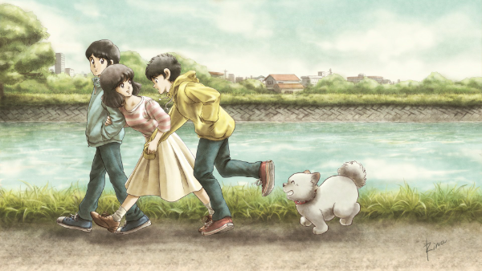
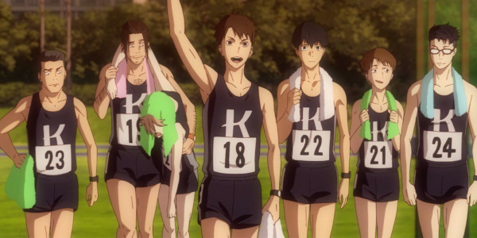
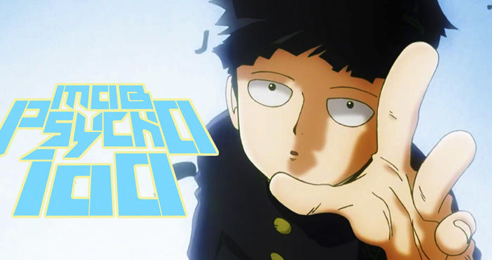

12:Touch
Touch esse ta bem mais fresco na minha Memória terminei essa semana e ja virou um dos meu favoritos , não e muito conhecido mas recomendo pra quem gosta de anime de esporte , Kazuya é um pitcher ás do time de sua escola. Minami e Kazuya são aceitos por todos como um casal que se encaixa perfeitamente. Tatsuya, por outro lado, é um preguiçoso, embora possa ter mais talento do que seu irmão, ele está disposto a permanecer nas sombras por causa dele.

Uesugi Tatsuya mais do que qualquer que vive ou ja viveu ama Asakura Minami
- tatsuya
11:Kaze ga Tsuyoku Fuiteiru
Kaze ga Tsuyoku Fuiteiru Nunca imaginei que um simples anime de corrida ia me motivar tanto , esse anime conta a história de como dez universitários com experiências, objetivos, e lugares na vida bem diferentes, treinam, se classificam e correm em uma tradicional maratona de revezamento no Japão, e o que isso significou para as vidas deles. recomendo
As Montanhas Hakone são as mais íngremes do mundo.
-haiji
10:Mob Psycho 100
Mob Psycho 100 do mesmo cridar de one punch man ,Kageyama Shigeo ou Mob é um garoto que não leva muito jeito pra se expressar, mas que é um poderoso telepata. Decidido a levar uma vida normal, Mob suprime seus poderes extrasensoriais, mas quando suas emoções atingem um pico de 100%, algo terrível lhe acontece! impossivel não gostar.
O Verdadeiro encanto é a Gentileza, vire alguém gente boa so isso.
- reigen